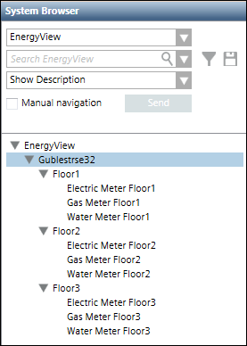
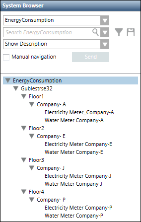
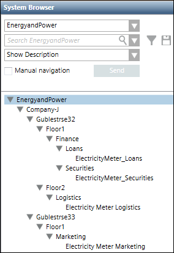
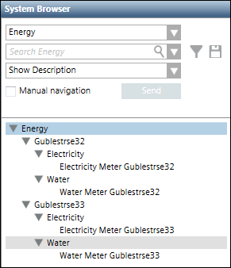

Representing the Managed Meters Layout
You can represent the layout of managed meters in the management station by creating a hierarchy below the user defined views. For information on creating a user defined view having hierarchies of buildings, floors, and managed meters assigned to the floors, see Creating a User-defined View for Managed Meters.
Your hierarchy can be based on the following parameters:
- Meters distributed across a geographical area, such as country, city, faculty, building, floor, plant and so on. For example, to calculate the energy consumption details for the different floors of a building, you can create a hierarchy that shows the meters installed on each floor of the building.
- Meters distributed across different occupants in a building, complex and so on. For example, assume there are four companies in one building; one on each floor. You want to know the details of energy and water consumption for each company. In this case, you can create a hierarchy of the main building and the names of the four companies based on different floors, with the energy and water meters installed in each company.
- Meters distributed on the basis of commercial or business perspective. For example, to monitor the energy consumption details of the different departments in an organization, you can create a hierarchy of the company with the various departments and the meters installed in each department.
- Meters distributed on the basis of media units such as water, power, gas or oil. In this case, you can create a hierarchy of the various media units and then associate meters to each media unit. For example, you can create a view and add electricity, gas, and water media units to this view. To this structure, you can then assign the meters for monitoring electricity, gas, and water consumption respectively.



